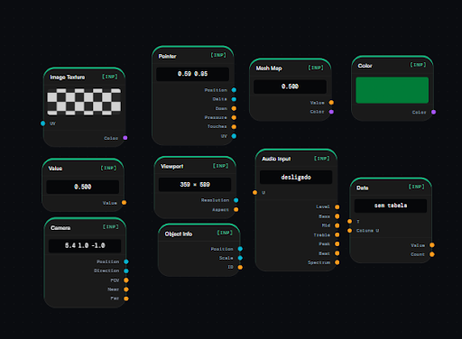
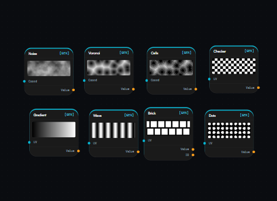
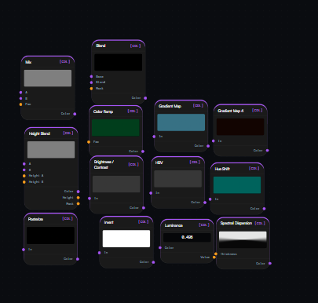
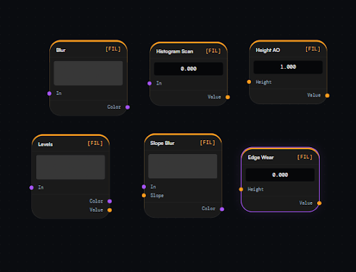
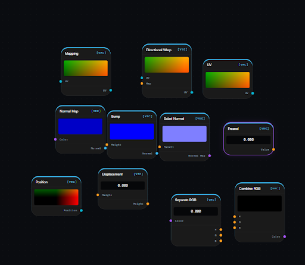
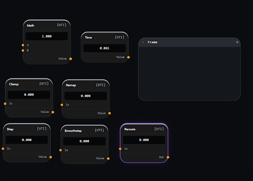
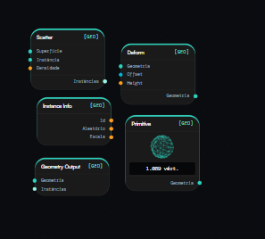
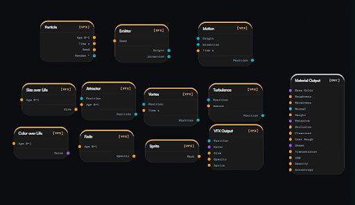

Manual Técnico Prism — Edição Unificada
Referência completa em um único arquivo: a arquitetura nodal e a coerção de portas, o catálogo técnico dos 90 nodes nas 9 categorias funcionais, o mapa de caminhos e os 60 padrões de produção — 30 receitas práticas (Vol. 2) e 30 fluxos de conexão com frames das portas reais (Vol. 3).
Estrutura do Manual
CLIQUE NUM TÓPICO PARA IR DIRETO →Catálogo Técnico — 90 Nodes
Fichas técnicas com template visual de portas, organizadas em sessões por categoria. Use TODAS AS SESSÕES para navegar categoria a categoria ou clique numa para focar.
Exemplos reais da interface Prism
CLIQUE PARA AMPLIAR · 1 IMAGEM POR CATEGORIA







GUIA RÁPIDO Como ler as fichas de node abrir ▼
Conversões automáticas: Escalar ➔ Cor/Vetor (auto-cast), Cor ➔ Escalar (luminância), Vetor ➔ Cor (XYZ➔RGB). Geometria e Instâncias não convertem para sinais numéricos.
- Nome em mono = identificador do node no grafo; a tag colorida indica a categoria.
- USO: dica prática de quando recorrer ao node.
- Costuma receber de / alimentar: vizinhos mais frequentes, calculados a partir das receitas e fluxos.
- Chips Receita/Fluxo: clicáveis — navegam direto para o exemplo completo.
- Especificações Técnicas: faixas padrão, comportamento interno e custo.
O template SVG de portas reproduz o layout real da interface; os rótulos dos pinos seguem os nomes originais (mistura de PT/EN).
Manual Prism — Vol. 2: Caminhos & 30 Receitas
Guia arquitetural completo sobre como os nodes da Prism se conectam, quais portas possuem afinidade natural, regras de coerção automática de dados e 30 receitas prontas para produção de materiais PBR, estilização NPR, áudio-reatividade, geometria procedural e VFX.
Anatomia Visual de um Node Prism (Clique nas Zonas)
Clique em qualquer região do diagrama esquemático abaixo para inspecionar sua função na interface.
1. Cabeçalho & Tag de Categoria
IDENTIFICAÇÃOExibe o nome funcional do operador à esquerda e o código de 3 letras da categoria à direita ([INP], [GEN], [COL], [FIL], [VEC], [UTI], [GEO], [VFX], [OUT]). A cor da borda superior acompanha o domínio da categoria.
Use a tag [CAT] para localizar rapidamente qualquer node no menu de busca ou na árvore do Volume 1.
Código de Cores das Portas & Regras de Coerção
| Pino | Tipo de Dado | Formato | Coerção Automática (Auto-Cast) |
|---|---|---|---|
| 🟠 Laranja | Escalar (Float) | 1 canal (x) | Expande para Cor (x, x, x, 1) ou Vetor (x, x, x) quando ligado em pinos roxos ou cianos. |
| 🔵 Ciano | Vetor / Coord | Vec2 / Vec3 | Extrai o canal X se conectado em Escalar; mapeia XYZ → RGB em pinos de Cor. |
| 🟣 Roxo | Cor (RGBA) | Vec4 (0..1) | Converte automaticamente para luminância em escala de cinza ao entrar em pinos Escalar. |
| 🟢 Turquesa | Geometria | Mesh Buffer | Exclusivo do domínio [GEO]. Não aceita sinais numéricos ou de cor. |
| 🟢 Turquesa | Instâncias | Instance Array | Gerado por Scatter e consumido exclusivamente por Geometry Output (Instâncias); na interface, compartilha a cor turquesa com a Geometria. |
Grupos (Importar grupo...)
No topo do menu de criação da Prism, a opção Importar grupo... permite encapsular sub-grafos complexos em um único bloco reutilizável com entradas e saídas expostas.
Mapa de Caminhos & Topologia de Conexões
Todo grafo na Prism flui da esquerda para a direita atravessando 4 estágios lógicos bem definidos.
Domínio & Coordenada
Define onde e quando avaliar o pixel ou vértice (UV, Position, Mapping, Directional Warp, Time).
Síntese & Amostragem
Gera sinais brutos ou lê fontes externas (Noise, Voronoi, Brick, Image Texture, Audio Input).
Modulação & Filtragem
Esculpe máscaras, calcula relevo/AO e coloriza (Histogram Scan, Edge Wear, Color Ramp, Height Blend).
Consolidação & Saída
Entrega os canais finais aos nós terminais (Material Output, Geometry Output, VFX Output).
Quais Portas Costumam se Encontrar? (Afinidade de Pinos)
Os 8 emparelhamentos de portas mais frequentes em grafos profissionais da Prism.
Inspetor de Compatibilidade entre Portas
Teste o comportamento do motor ao ligar qualquer tipo de saída em uma entrada.
Padrões de Bifurcação & Convergência
Um único Noise (Value) alimenta simultaneamente Color Ramp (Albedo), Bump (Normal), Height AO (Occlusion) e Levels (Roughness) garantindo coerência física entre cor e relevo.
Use Math [Add/Multiply] para fundir máscaras escalares, Mix / Blend para camadas de cor e Height Blend quando precisar unir dois materiais completos respeitando o relevo de cada um.
Receitas & Combinações Úteis de Nodes (30 Padrões)
30 padrões de produção em 6 domínios técnicos — utilidade, calibração e link direto para o fluxo de conexão com as portas reais.
Fluxos de Conexão — 30 Blueprints Aprimorados
Biblioteca completa de padrões de encadeamento prontos para produção na Prism. Cada fluxo apresenta os frames dos nodes com suas portas reais (entradas à esquerda, saídas à direita; portas acesas = conectadas neste fluxo), a conexão exata entre as etapas e os parâmetros internos recomendados.